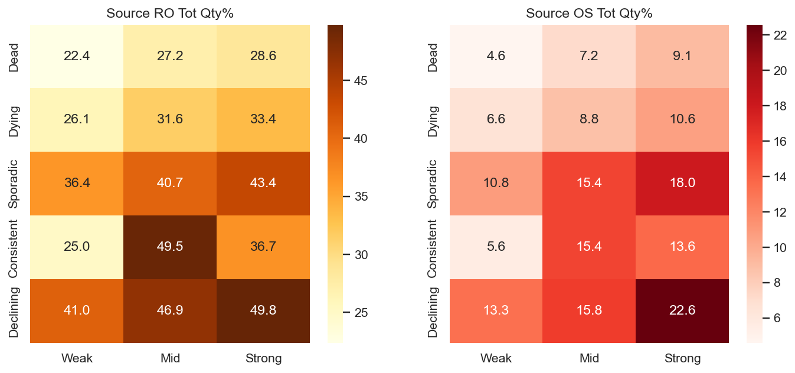
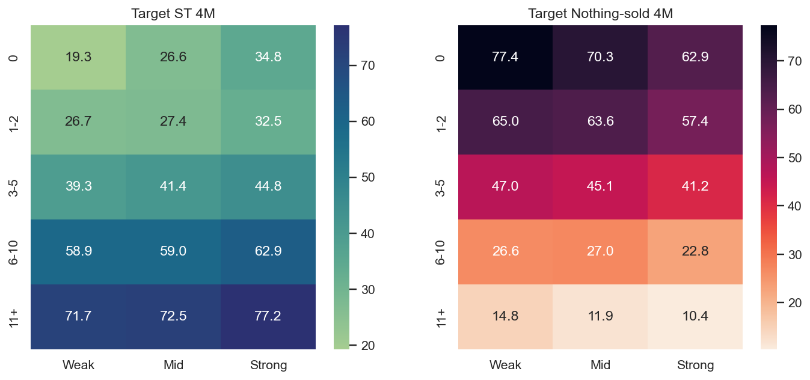
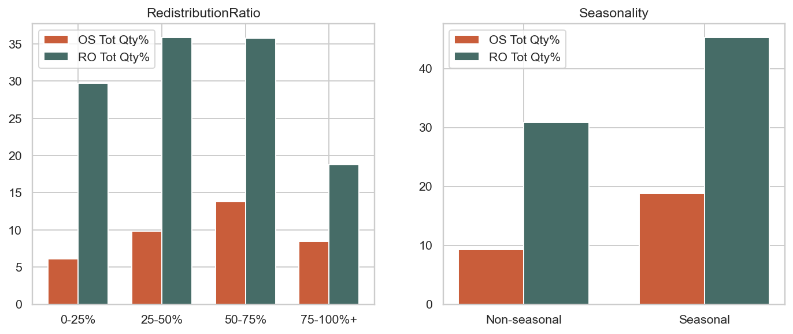
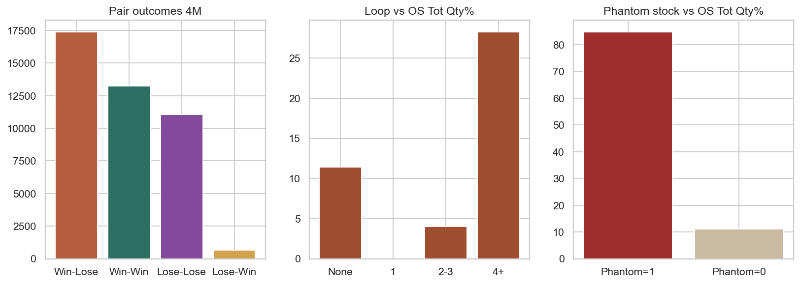
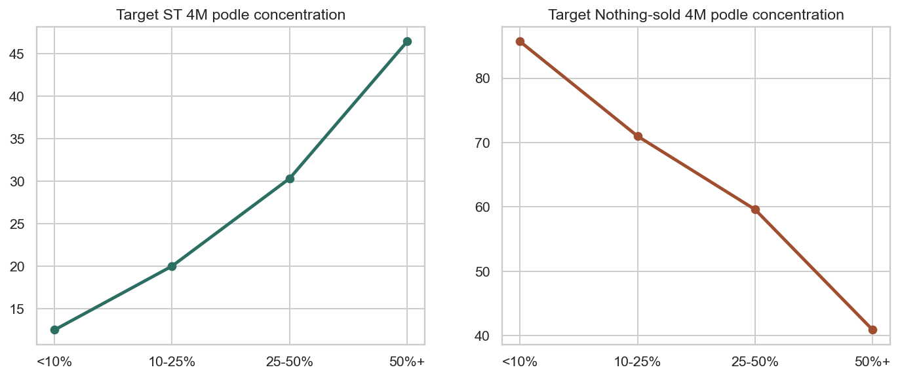

Kompletni v5 findings nad novou SBM_v5 vrstvou a bez prevzeti predchozi analyticke logiky.
| Kontrola | Vysledek |
|---|---|
| Redistribucnich paru | 42 404 |
| Redistribuovanych ks | 48 754 |
| Source SKU | 36 770 |
| Target SKU | 41 631 |
| Dotcenych SKU celkem | 78 401 |
| Dotcenych produktu | 5 152 |
| Prodejen v analytice | 353 |
| Duplicity paru | 0 |
| Source = Target | 0 |
| Non-positive qty | 0 |
| SKU bez supply historie | 0 |
| Missing calc/current snapshot | 0 / 0 |
| Missing SourceEntityMinLayer | 1 798 (ML=0, JSON NULL) |
| Metrika | 4M SKU | 4M Qty | Total SKU | Total Qty |
|---|---|---|---|---|
| Oversell | 1 317 (3.6%) | 1 464 (3.0%) | 4 718 (12.8%) | 5 578 (11.4%) |
| Reorder | 7 087 (19.3%) | 7 980 (16.4%) | 13 841 (37.6%) | 16 615 (34.1%) |
| Metrika | 4M | Total |
|---|---|---|
| Avg Sell-Through | 45.3% | 69.2% |
| Avg ST-1pc | 58.2% | 79.6% |
| Nothing-sold | 17 552 (42.2%) | 8 872 (21.3%) |
| All-sold | 13 631 (32.7%) | 24 862 (59.7%) |
Vstup je cisty. Jedina zvlastnost jsou source JSON NULL pripady s aktualnim ML=0.
| Pattern | Store | SKU | Qty | OS Tot Qty% | RO Tot Qty% |
|---|---|---|---|---|---|
| Dead | Weak | 4987 | 6009 | 4.6 | 22.4 |
| Dead | Mid | 6003 | 7398 | 7.2 | 27.2 |
| Dead | Strong | 4523 | 5732 | 9.1 | 28.6 |
| Dying | Weak | 1757 | 2135 | 6.6 | 26.1 |
| Dying | Mid | 2346 | 2860 | 8.8 | 31.6 |
| Dying | Strong | 2085 | 2536 | 10.6 | 33.4 |
| Sporadic | Weak | 2819 | 3715 | 10.8 | 36.4 |
| Sporadic | Mid | 4437 | 6048 | 15.4 | 40.7 |
| Sporadic | Strong | 5289 | 7820 | 18.0 | 43.4 |
| Consistent | Weak | 33 | 72 | 5.6 | 25.0 |
| Consistent | Mid | 44 | 91 | 15.4 | 49.5 |
| Consistent | Strong | 214 | 433 | 13.6 | 36.7 |
| Declining | Weak | 283 | 459 | 13.3 | 41.0 |
| Declining | Mid | 598 | 1025 | 15.8 | 46.9 |
| Declining | Strong | 1352 | 2421 | 22.6 | 49.8 |
| SalesBucket | Store | SKU | Avg ST 4M | Nothing-sold 4M | All-sold 4M |
|---|---|---|---|---|---|
| 0 | Weak | 186 | 19.3 | 77.4 | 17.2 |
| 0 | Mid | 259 | 26.6 | 70.3 | 24.3 |
| 0 | Strong | 278 | 34.8 | 62.9 | 33.5 |
| 1-2 | Weak | 1935 | 26.7 | 65.0 | 18.4 |
| 1-2 | Mid | 3893 | 27.4 | 63.6 | 18.3 |
| 1-2 | Strong | 4253 | 32.5 | 57.4 | 22.5 |
| 3-5 | Weak | 2562 | 39.3 | 47.0 | 25.7 |
| 3-5 | Mid | 6395 | 41.4 | 45.1 | 28.0 |
| 3-5 | Strong | 10426 | 44.8 | 41.2 | 31.0 |
| 6-10 | Weak | 980 | 58.9 | 26.6 | 44.6 |
| 6-10 | Mid | 2733 | 59.0 | 27.0 | 45.0 |
| 6-10 | Strong | 5379 | 62.9 | 22.8 | 49.0 |
| 11+ | Weak | 229 | 71.7 | 14.8 | 54.6 |
| 11+ | Mid | 695 | 72.5 | 11.9 | 55.8 |
| 11+ | Strong | 1428 | 77.2 | 10.4 | 64.2 |


| Ratio | SKU | OS Tot Qty% | RO Tot Qty% |
|---|---|---|---|
| 0-25% | 4297 | 6.1 | 29.7 |
| 25-50% | 10825 | 9.8 | 35.9 |
| 50-75% | 20091 | 13.8 | 35.8 |
| 75-100%+ | 1557 | 8.4 | 18.8 |
| Outcome | Pairs |
|---|---|
| Win-Lose | 17409 |
| Win-Win | 13243 |
| Lose-Lose | 11078 |
| Lose-Win | 674 |


Nejvetsi opportunity je presun objemu: od Win-Lose transferu k growth pockets, kde target potvrzuje vysokou absorpci a model uz neni netto silne defenzivni.
